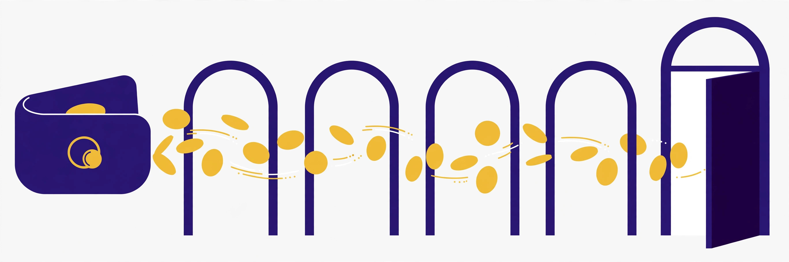

Payout thresholds and payment methods for AI affiliate programs: how long until a first payout?

Earning a commission and receiving money are separated by four gates, and most program roundups only mention the first. There is the payout threshold (the balance you must accumulate), the hold or verification period (the wait while a sale proves it will not refund), the payout cadence (the fixed day the program pays), and the payment rail (PayPal, Wise, a network like Impact, or a platform like FirstPromoter or PartnerStack). Stack all four and the honest answer to “when do I first get paid?” ranges from about six weeks to the better part of a quarter across the AI programs in this directory — even when the thresholds look similar. Every figure below was checked against the program’s official page or terms on 2026-10-13.
The verified thresholds, holds, and rails compared
| Program | Minimum payout | Hold / maturation | Paid when, and how |
|---|---|---|---|
| Opus Clip | $20 | Not stated on the program page | 15th of each month, via PayPal (USD); allow 3–5 days for funds to arrive |
| Jasper | $25 | Customer must remain in good standing for 30 days or the commission is forfeited | Via the program’s payment processors, including PayPal and Wise |
| HeyGen | $30 | 60-day verification period | Next monthly cycle after verification, within the first five working days of the month; PayPal only |
| Synthesia | Over $30 | Commission becomes due one month after purchase | Within the first five business days of the month; balances at or under $30 roll forward |
| Fliki | $50 | Not stated on the program page | 1st of every month via Wise; PayPal for amounts over $50 on request |
| Tidio | $50 | Not stated in the help article | One payout request per month; commissions sent in bulk once a month |
| Pabbly | $50 | 60-day maturation period before a sale counts toward payout | Commission reports generated on the 15th of each month |
| Frase | $100 | Not stated on the program page | Monthly via PayPal for the previous month, once the balance exceeds $100 |
| Rytr | $100 | Commission due 30 days after the transaction | First working day of the month after the due date |
| Colossyan | Not stated on the program page | Not stated on the program page | Monthly; Wise preferred, PayPal under certain conditions |
| Writesonic | Not stated on the program page | 30-day hold on new commissions | Monthly via FirstPromoter; tax form (W-9 or W-8BEN) required before the first payout |
| InVideo AI | Not stated in the help article | Transactions lock 27 days after tracking | Via Impact, 15 days after the month in which the transaction locked |
Three observations. First, the threshold spread is fivefold — $20 at Opus Clip against $100 at Frase and Rytr — and it decides how many sales a beginner needs before seeing anything at all. Second, the two longest hidden delays belong to programs whose thresholds look mid-pack: HeyGen’s $30 is easy to reach but sits behind a 60-day verification period, and Pabbly’s $50 sits behind a 60-day maturation period. Third, rails are narrowing to a few networks: PartnerStack carries Descript’s payments, FirstPromoter carries Writesonic’s, and Impact carries InVideo AI’s, so a promoter in several programs will juggle several dashboards, each with its own balance that does not combine with the others.
Worked timelines: earliest realistic first payout
Assume a first qualifying sale on 1 November and a balance that reaches the threshold with that sale or shortly after. The timelines below apply only the delays each program publishes; tax forms, account approvals, and slow balance-building push real first payouts later.
- Opus Clip (fastest documented path): a balance over $20 is paid on the 15th of the month, with funds arriving a few days later — roughly mid-December for a 1 November sale if the balance clears in November’s cycle, and about six weeks end to end in the cleanest reading of the published rules.
- HeyGen: the 60-day verification period runs to the end of December; the commission then enters the next monthly payout, processed within the first five working days of January — about nine to ten weeks after the sale, despite the low $30 threshold.
- Pabbly: the 60-day maturation period likewise ends around the start of January, and the commission appears in the report generated on 15 January — a similar two-and-a-half-month path, provided the $50 threshold is met.
- Rytr (worked example from its own terms): Rytr’s terms illustrate the cadence with a conversion on 14 March becoming payable on the first working day of May, because commission falls due 30 days after the transaction and is paid on the first working day of the following month — roughly seven weeks, before allowing for the $100 threshold.
- InVideo AI: a transaction locks 27 days after tracking and is paid 15 days after the end of its lock month, putting a 1 November sale into a mid-December payment at the earliest.
The pattern worth internalising: hold periods, not thresholds, dominate the timeline at most programs. A promoter choosing purely on the smallest threshold can still wait longer than a promoter on a $100-threshold program with no published hold.
Extra gates roundups never mention
Two conditions in the fine print deserve prominence. Frase requires more than one active referred customer before commissions are paid at all — a single successful referral, however large, does not trigger a payout on its own, and it stacks on top of the $100 threshold. Rytr’s terms add a use-it-or-lose-it clock at the other end: commissions that remain unclaimed or unpaid for more than 12 months after becoming payable are forfeited. Writesonic’s paperwork gate is blunter but catches international promoters out: a W-9 for US affiliates or a W-8BEN for international ones must be submitted before the first payout, so the first payment waits on tax documentation as well as on the 30-day commission hold. None of these conditions is unreasonable; all of them are invisible if you only read the headline rate.
Payment methods and what they mean for you
PayPal is the most common rail in this set (Opus Clip pays only by PayPal; HeyGen likewise), which is convenient but concentrates risk in one account type. Wise appears where programs expect international affiliates: Fliki pays by Wise by default on the 1st of each month, Colossyan prefers Wise with PayPal available under certain conditions, and Jasper’s agreement lists PayPal and Wise among its payment processors. Network rails (Impact for InVideo AI, FirstPromoter for Writesonic, PartnerStack for Descript) pay on the network’s schedule rather than the brand’s, which is why InVideo AI’s lock-and-pay rhythm looks nothing like a direct program’s. Before building content around a program, confirm you can actually receive its rail in your country and currency — a commission you cannot withdraw is a number on a dashboard, not income.
Choosing programs by payout speed: a decision framework
If you are starting out, favour low thresholds with short or unpublished holds (Opus Clip at $20) so the feedback loop closes quickly and you learn whether your content converts before investing more in it. If you promote steadily, thresholds stop mattering within a few months; choose on commission model and fit, and treat hold periods as a one-off delay on the first payment rather than a recurring cost. Whatever your stage, keep a simple tracker with one row per program: threshold, hold days, payout day, rail, and the tax form required. The tracker takes ten minutes to build from official pages and prevents the most common beginner surprise in affiliate marketing — a dashboard balance that was never going to arrive when expected.
Important: no income guarantees
Affiliate income is never guaranteed, and a payout threshold is a minimum for payment, not a promise that you will reach it. Thresholds, hold periods, and payment methods change; Rytr’s terms, for example, note that amounts and timing follow the current published terms. All figures here were checked against official program pages on 2026-10-13 — always verify the current terms on the official page before relying on them, and report affiliate income for tax purposes as your local rules require.
FAQ
Which AI affiliate program in this directory has the lowest payout threshold?
Opus Clip, at $20 in earned commission, paid on the 15th of each month via PayPal, per its official affiliate page checked on 2026-10-13.
Why hasn’t a commission I earned weeks ago been paid?
Usually one of the four gates: the balance is under the threshold, the sale is still inside a hold period (60 days at HeyGen and Pabbly, 30 days at Writesonic), the monthly payout day has not arrived, or a required tax form is missing. Check them in that order in the program’s official terms.
Do balances in different programs combine toward a threshold?
No. Each program — and each network such as Impact, FirstPromoter, or PartnerStack — tracks its own balance. Five programs at $40 each is $200 earned and $0 payable if every threshold is $50.
Can unpaid commissions expire?
At least one program in this directory says yes: Rytr’s terms forfeit commissions that stay unclaimed or unpaid for more than 12 months after becoming payable. Keep payout details current so a payment never fails silently.